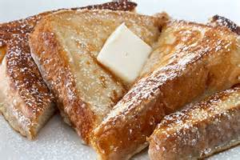

French Toast
List of Ingredients
| 1 tsp | ground cinnamon |
| 1/4 tsp | ground nutmeg |
| 2 tbsp | sugar |
| 4 tbsp | butter |
| 4 | eggs |
| 1/4 cup | milk |
| 1/2 tsp | vanilla extract |
| 8 slices | challah, brioche, or texas bread |
| 1 cup | maple syrup, warmed |
Steps - How to Make French Toast
- Combine, cinnamon, nutmeg, and sugar
- Melt butter in pan
- Whisk together cinnamon mixture, eggs, milk, and vanilla
- Pour into shallow container
- Dip bread in egg mixture
- Fry slices until golden brown on both sides
- Serve with warm syrup